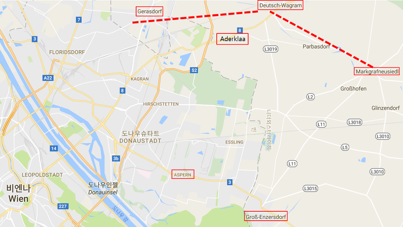
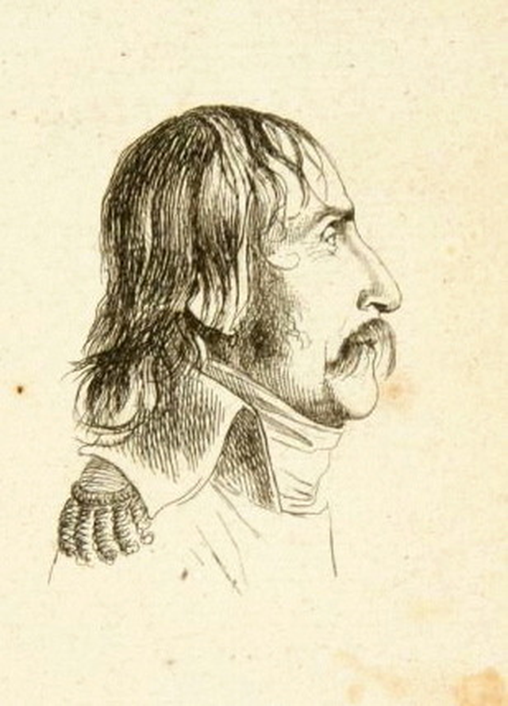

바그람 전투 (4편) - 모두가 흰색이다 !
게시: 2017-06-25T22:02:49+09:00
이렇게 7월 5일 저녁 6시 경, 나폴레옹의 군단들이 게라스도르프(Gerasdorf)-바그람(Wagram)-마르크그라프노이지들(Markgrafneusiedl) 마을로 이어지는 오스트리아 방어선 앞에 전개하면서 나폴레옹은 이 날의 1차 목표, 즉 도나우 강을 건너 전체 병력을 전개한다는 목표를 성공적으로 달성했습니다. 마르히펠트에 쓸데없이 포진해있던 오스트리아군을 제때에 포착, 쉴새없이 공격하여 6천이 넘는 피해를 입힌 것도 기분 좋은 시작이었으나, 나폴레옹이 아군과 적군의 전개 모습을 보니 상황이 훨씬 더 좋았습니다. 요한 대공이 이끄는 오스트리아 내부군(Army of Inner Austria)이 접근했다는 소식이 들려오지 않았던 것입니다. 프레스부르크(Pressburg, 현재의 슬로바키아 수도인 브라티슬라바 Bratislava)에 주둔한 요한 대공의 군대와 대치하고 있던 외젠의 이탈리아 방면군은 이미 자신의 지휘 하에 저렇게 전개되어 있는데 요한 대공의 군대가 없다는 것은 자신에게 결정적인 우세가 생겼다는 것이었습니다.

(당시 전장의 주요 마을 명칭을 붉은색 사각형으로 표시했습니다. 당시 마을의 위치가 지금과는 많이 다를 수 있습니다. 가령 저 에슬링 마을은 당시보다 훨씬 북쪽으로 옮겨온 것입니다.)
뿐만 아니었습니다. 프랑스군이 내선이동이라는 이점을 가지고 있었던 것입니다. 나폴레옹이 보니, 카알 대공은 게라스도르프-바그람의 비삼베르크 고지대와 바그람-마르크그라프노이지들의 루스바흐 고지대라는 완만하게 반원형으로 마르히펠트 평원을 감싼 두 능선에서 프랑스군을 집게로 죄듯이 양측에서 포위하겠다는 생각을 가진 듯 했습니다. 그러나 이는 나폴레옹이 보기에 매우 어설픈 포진이었습니다. 오스트리아군의 오른쪽 끝, 즉 게라스도르프로부터 오스트리아군의 왼쪽 끝, 즉 마르크그라프노이지들까지의 거리는 약 12km의 먼 거리였습니다. 또한 오스트리아군은 고지대 경사면 바로 위쪽에 구축해둔 토루나 참호같은 방어 시설에 의존하여 싸울 생각인 모양이지만, 어차피 나폴레옹이 중앙 공격을 한다면 양쪽 끝의 오스트리아군은 중앙부를 지원하기 위해 애써 만들어둔 고지대의 방어 시설을 포기하고 저지대의 프랑스군을 측면에서 공격하기 위해 좌우익이 각각 6km씩을 헐레벌떡 뛰어와야 했습니다. 그에 비해 나폴레옹은 반원형의 안쪽 면에서, 어느 지점의 오스트리아 방어선을 뚫을지 여유있게 선택할 수 있을 뿐만 아니라, 어느 지점으로든 훨씬 짧은 거리만 이동하면 되었으므로 기동성에 있어 절대 유리했습니다. 나폴레옹은 기본적으로 오스트리아 방어선에서 가장 방어하기 곤란한 형태의 공격을 할 생각이었습니다. 즉 맨 동쪽 끝인 마르크그라프노이지들을 측면으로부터 공격할 생각이었지요.
이렇게 생각하니 나폴레옹은 갑자기 초초해졌습니다. 이런 유리한 상황에서 무엇이 나폴레옹을 불안하게 했을까요 ? 2가지였습니다. 첫째, 요한 대공의 병력이 언제 동쪽에서 짠 하고 등장할지 아무도 모르는 일이었습니다. 둘째, 아무래도 저지대에서 고지대 위쪽의 상황을 정찰하는 것은 어려운 일인지라, 대체 저 고지 위에 오스트리아의 전체 병력이 웅크리고 있는지 아니면 불과 1~2개 군단만 대기하고 있을지 알 수가 없었습니다. 나폴레옹에게 있어 최악의 상황은 카알 대공이 싸우러 나오는 것이 아니라 전투를 거부하고 저 멀리 보헤미아로 또 철수하는 것이었습니다. 나폴레옹은 여기서 빨리 결판을 내고 이 전쟁을 끝내고 싶었으므로, 몸이 달았습니다.
원래 나폴레옹은 야간 전투를 꺼려했습니다. 원래 명장일 수록 운에 의존하기 보다는 모든 상황을 계산에 넣고 제어해가면서 싸우는 것을 좋아합니다. 그런데 병력 통제는 커녕 피아 구별도 하기 힘든 야간 전투에서는 상당 부분이 운에 맡겨질 수 밖에 없었으니 당연한 일이었습니다. 그런데 여기서 빨리 전쟁을 끝내고 싶었던 초조함이 나폴레옹에게 과욕을 부리게 합니다. 그는 어제 밤부터 잠도 못 자고 힘든 하루를 보낸 뒤 이제 슬슬 숙영 준비를 하려던 병사들에게 뜻 밖에도 공격 명령을 내립니다. 그것도 당장 1~2시간 안에 공격하라는 명령이었습니다.
이는 휘하 군단장들을 놀라게 하기 전에, 당장 나폴레옹 직속 참모 장교들을 당황시켰습니다. 나폴레옹의 의향대로 명령서를 받아적고 깔끔한 문장으로 정리한 뒤 이제 막 어두워지는 이 넓은 마르히펠트 평원을 말을 달려 이 명령서를 받을 수신인, 즉 각 군단장들을 찾아 제때에 전달하는 것은 결코 쉬운 일이 아니었고, 시간이 걸릴 수 밖에 없는 일이었습니다. 결국 나폴레옹의 명령서들은 각 군단장들에게 제각각 시간 차를 두고 전달되었는데, 명령서 내용은 '즉각 공격하라'는 것이었으니 각 군단들의 공격은 전혀 동기화되지 못한 채 시간 차를 두고 뿔뿔이 분산된 공격을 하게 되었습니다. 게다가 일부 군단들은 아직 휘하 사단들이 제 위치로 이동하지도 못한 상태였기 때문에, 공격 개시가 더욱 늦어질 수 밖에 없었습니다.
나폴레옹의 원래 의도는 오스트리아군의 양쪽 날개 중 동쪽 날개, 즉 루스바흐 고지의 바그람-마르크그라프노이지들 라인을 3개 군단을 동원하여 일제히 공격하여 오스트리아군 방어선 전체를 견제하면서, 결정타로는 다부의 제3 군단을 이용하여 맨 동쪽 끝의 마르크그라프노이지들부터 서쪽으로 돌돌 말아올리는 것이었습니다. 그러자면 이 공격이 일제히 시작되어 오스트리아군의 대혼란에 빠뜨려야 했습니다. 그러나 이 공격은 전혀 타이밍을 못 맞춘 채 시작되었을 뿐만 아니라, 우연인지 필연인지 온갖 불운이 따르면서 오히려 프랑스군 측이 대혼란에 빠지는 결과를 낳았습니다.
일단, 시작은 우디노 제2 군단이 끊었습니다. 나폴레옹의 위치로부터 가까운, 중앙부 쪽에 있던 우디노는 나폴레옹이 원하던 대로 저녁 7시 경에 공격을 시작할 수 있었습니다. 우디노의 앞에 있던 오스트리아군은 고지에 보루를 구축하고 68문의 대포를 이용해 진격하는 프랑스군을 두들겼으나, 제2 군단은 호기있게 루스바흐(Russbach) 시냇물을 건너 루스바흐 고지의 경사면을 기어올라 바우머스도르프(Baumersdorf) 마을을 공격했습니다. 이 마을은 목조 주택이 30여 채 정도 있는 매우 작은 마을이었는데, 프랑스군의 포격으로 인해 이 가옥들에 화재가 발생하여 꽤 많은 연기를 토해냈습니다. 이 연기와 화재에도 불구하고 호헨촐레른(Hozenzollern) 장군이 지휘하는 오스트리아군은 굳게 바우머스도르프를 지켰습니다. 오스트리아군이 무너지지 않자, 우디노는 이 마을 측면에 프랑스군 전체에서 가장 정예부대라고 소문난 제57 전열 연대, 별칭 '무시무시한 녀석들(Les Terribles)'까지 투입했습니다. 그러나 오스트리아군은 여전히 완강하게 저항했고, 호헨촐레른 장군이 직접 기병대를 끌고 반격을 가하자 공격하던 프랑스군이 오히려 무너져 내렸습니다. 결국 공격을 개시한지 1시간 만에 우디노의 공격은 큰 피해만 입은 채 지리멸렬한 추태를 보이며 좌절되고 말았습니다.
한편, 그 바로 서쪽 측면에서는 우디노보다 조금 늦게, 제5 군단이 막도날드의 지휘 하에 도이치-바그람(Deutsch-Wagram) 마을을 공격하기 시작했습니다. 이 마을은 비삼베르크 능선과 루스바흐 능선을 연결하는 요충지였고, 따라서 나폴레옹은 여기에 공격력을 집중했습니다. 그보다 막도날드의 좌측, 즉 바로 서쪽 측면에서 공격을 하게 되어 있던 베르나도트의 제9 군단으로부터 뒤파(Pierre-Louis Dupas) 장군의 사단이 파견되어 막도날드 지휘 하에 이곳을 공격했습니다. 그러나 여기서도 오스트리아군의 저항은 매우 치열했습니다. 프랑스군의 공격에 오스트리아 포병대가 대포를 버리고 달아나는 등 일부 전열이 무너지기도 했으나, 오스트리아군은 벨가르드(Bellegarde) 장군의 최전선 독려에 힘입어 끝끝내 버텼습니다.

(이 분이 뒤파 장군입니다. 그는 Evian 생수로 유명한 에비앙 태생으로서, 사보이 공국의 평민 출신이었습니다. 태생이 그렇다보니 14세 때 프랑스군이 아니라 이탈리아 사르디니아 왕국군에 입대했다가, 나중에는 역시 이탈리아 도시국가인 제노바에서 하사관으로 복무했습니다. 그러다 흘러흘러 파리로 들어왔다가, 프랑스 대혁명의 시발점이 된 1789년 7월 14일에 바스티유를 습격한 폭도 중의 한명이 되는 영광(?)을 누리기도 했지요. 그는 나폴레옹을 따라 이집트 원정에도 따라간 용감한 군인이었는데, 너무 용감한 군인이 흔히 그렇듯이 많은 부상을 입어 결국 1809년 바그람 전투 이후 제대하게 됩니다.)
이러는 사이 화재 연기와 어둠 속에서 도이치 바그람 마을 안의 시계는 무척 나빠졌습니다. 이때부터 심각한 혼란이 발생하기 시작합니다. 오스트리아군은 전통적으로 흰색 군복 차림이었는데, 베르나도트의 제9 군단, 즉 작센군도 전통적으로 흰색 군복 차림이었습니다. 당연히 그 휘하였던 뒤파 장군의 사단 병사들도 모두 흰색 군복을 입고 있었습니다. 막도날드 휘하의 이탈리아 방면군은 다른 방향에서 진격해온 뒤파 휘하의 작센군과 혼전 속의 바그람 마을 안에서 마주쳤는데, 이들은 그만 작센군을 오스트리아군으로 착각하고 일제히 발포해버렸습니다. 바이에른군과는 달리 작센군은 가뜩이나 남의 나라 전쟁에 끌려와 사기가 좋지 않은 편이었는데, 이 오인 사격은 그들의 사기를 완전히 꺾어 놓았습니다. 작센군은 무질서하게 후퇴하며 그 일대를 더욱 혼란스럽게 만들어 버렸습니다. 이때 카알 대공 본인이 직접 달려와 병사들을 독려하면서 오스트리아군은 더욱 열정적으로 덤벼 들었고, 결국 막도날드의 이탈리아 방면군도 무질서하게 후퇴해버렸습니다.
한편, 그 왼편, 즉 더 서쪽에서는 작센군으로 이루어진 베르나도트 원수의 제9 군단이 역시 도이치-바그람 마을을 공격하게 되어 있었습니다. 막도날드와 베르나도트의 2개 군단이 바그람을 양쪽에서 집중 공격하게 되어 있었으므로 아마 나폴레옹은 승리를 의심하지 않았을 것입니다. 그러나 베르나도트는 시작하기 훨씬 전부터 무척 삐져있었습니다. 일단 그는 애초부터 자신이 프랑스 군단이 아닌 작센 군단을 맡게 되었다는 것에 화가 나 있었는데, 이번 공격 직전에 그나마 있던 3개 작센 사단 중 뒤파 사단을 막도날드에게 빌려주라는 명령을 받고 더욱 분개한 상태였습니다. 게다가 베르나도트의 2개 사단 중 제쥬비츠(Zezschwitz) 장군의 사단은 아직 현장에 도착하지도 않았으므로, 베르나도트는 막도날드와 함께 공격하고 싶어도 공격하기가 곤란한 상황이었습니다. 그래도 남은 르코크(Lecoq) 장군의 1개 사단만이라도 동원해서 막도날드와 함께 동시에 공격을 시작해야만 했었는데, 베르나도트는 심통이 단단히 났는지 나폴레옹의 터무니 없이 조급한 명령 탓만 하며 제쥬비츠 사단이 현장에 도착할 때까지 공격을 시작하지 않았습니다.
마침내 제쥬비츠 사단이 도착한 9시 경에야 베르나도트는 무거운 엉덩이를 들고 바그람 마을에 대해 공격을 시작했습니다. 그런데, 뒤늦게 쳐들어간 바그람 마을은 연기와 어둠 속에서 그야말로 대혼란 상태였습니다. 그곳으로 쳐들어갔던 하르티쉬(Hartizsch) 장군은 그곳에 이미 뒤파 장군의 작센 사단이 있을 거라는 정보를 듣지 못한 상태에서 용감하게 뛰어든 것인데, 가보니 적군인지 아군인지 알 수 없는 병사들이 모두 흰색 군복을 입고 독일어로 고함을 치며 서로에게 총질을 해대고 있었던 것입니다 ! 하르티쉬 장군의 작센군도 에라 모르겠다라는 심정으로 닥치는 대로 총격전을 벌였고, 급기야 백병전까지 벌이게 되었습니다. 나중에야 서로가 같은 작센군이라는 사실을 알게된 양측 병사들은 모두 맥이 빠졌습니다. 그러나 여전히 같은 색 군복을 입은 오스트리아군이 이들을 강력하게 밀어붙이고 있었으므로, 가뜩이나 사기가 좋지 않았던 베르나도트의 제9 군단 병사들은 우르르 무너져 보기 흉한 패주를 시작했습니다. 이들은 완전히 궤멸 상태에 빠져, 마르히펠트 평원 언저리의 요충지인 아더클라(Aderklaa) 마을까지 후퇴했는데, 여기서도 재집결을 하지 않고 더 도망치는 병사들도 많았습니다. 이렇게 완전히 무너진 군단을 다시 모으고 재편성하느라 베르나도트는 그날 밤 소집된 나폴레옹의 군단장 회의에도 나타나지 못할 정도였습니다.
한편, 가장 동쪽 끝에 있던 다부의 제3 군단이 사실상 이 공격의 주력이라고 할 수 있었습니다. 다른 군단들이 3개 보병 사단 약 2~3만명 수준의 병력을 갖춘 것에 비해, 다부의 제3 군단은 4개 보병 사단에 4만2천의 병력을 갖춘, 그야말로 튼실한 군단이었습니다. 나폴레옹의 의중대로라면 이런 병력을 갖춘 다부가 동쪽 끝인 마르크그라프노이지들 마을부터 오스트리아군을 루스바흐 능선을 따라 돌돌 말아올리며 서쪽으로 진격하는 모양새가 되어야 했습니다. 그러나 모범생 다부조차도 나폴레옹의 명령서를 늦게 받았는지 준비가 덜 된 상태라서 그랬는지, 베르나도트보다 더 늦게 밤 9시가 넘어서야 공격을 시작했습니다. 그래도 다부는 모범생답게 구댕(Gudin)과 퓌토(Puthd) 사단의 정면 공격과 함께 측면에서 프리앙(Friant)과 모랑(Morand) 사단이 측면 공격을 통해 오스트리아군을 무너뜨리도록 작전을 전개했습니다. 그러나 전투가 시작되자, 오스트리아군의 투지와 방어태세가 결코 만만치 않았습니다. 빗발치는 포탄과 총탄 속에 휘하 사단들이 고지 위로 전진을 못하는 것을 보자, 다부는 '이건 이미 망한 전투'라고 결론을 내고 1시간 만인 밤 10시 경에 공격 명령을 취소시키고 병력을 후퇴시켰습니다.
이렇게 7월 5일 밤, 나폴레옹의 호기로운 공격은 처참한 패배로 끝나고 말았습니다. 프랑스군은 근 6km가 넘는 전선에서 약 1만1천의 사상자를 내며 물러났습니다. 생각해보면 이 패배는 예측 가능한 것이었습니다. 이날 낮에 벌어졌던 전투에서 그 징조가 보였지요. 노르드만 장군의 오스트리아군 전위대를 하루종일 그토록 괴롭히며 무려 50%의 사상자가 날 정도의 피해를 입혔는데도 노르드만 부대는 무너지지 않았습니다. 아마 1805년 당시의 오스트리아군이라면 아마 몇 시간 못 버티고 무너져 부대 전체가 항복하거나 완전 궤멸되었을 것입니다. 그러나 이들은 끝끝내 버티며 결국 절반이라도 살아서 오스트리아군 방어선에 합류할 수 있었지요. 카알 대공의 국방 개혁은 확실히 성과를 내고 있었던 것입니다. 오스트리아군은 1805년 당시의 투지 없고 미숙한 부대가 아니었습니다. 반면, 프랑스군의 수준은 과거보다 확실히 떨어져 있었습니다. 아무래도 새로 징집된 신병들이 잔뜩 섞인데다 작센 병사들과 이탈리아 병사들이 많이 포함된 군대는, 과거처럼 혁명 정신에 불타는 프랑스 고참 병사들로 구성된 과거의 그랑 다르메(Grande Armee)가 아니었던 것입니다.
이런 패배에도 불구하고 나폴레옹은 그다지 낙담하지 않았습니다. 일단 이 전투를 통해 루스바흐 고원 위에 카알 대공이 오스트리아 주력군 전체를 이끌고 결전을 벌이려 하고 있다는 사실이 확인되었기 때문이었습니다. 그는 또한 자신의 큰 그림, 즉 동쪽부터 서쪽으로 오스트리아군을 김밥말이하겠다는 작전의 유효성에 대해서도 확신했습니다. 비록 오늘밤의 공격은 '불운'으로 인해 실패로 끝났지만, 날이 밝은 상태에서 제대로 공격한다면 성공하리라고 자신했던 것입니다.
그러나 그 다음날 새벽의 상황은 나폴레옹이 생각했던 것보다 훨씬 더 험악했습니다. 뜻 밖에도, 오히려 카알 대공이 밀고 내려왔던 것입니다.
Source : The Reign of Napoleon Bonaparte by Robert Asprey
With Napoleon's Guns by Jean-Nicolas-Auguste Noel
http://www.historyofwar.org/articles/battles_wagram.html
https://en.wikipedia.org/wiki/Battle_of_Wagram